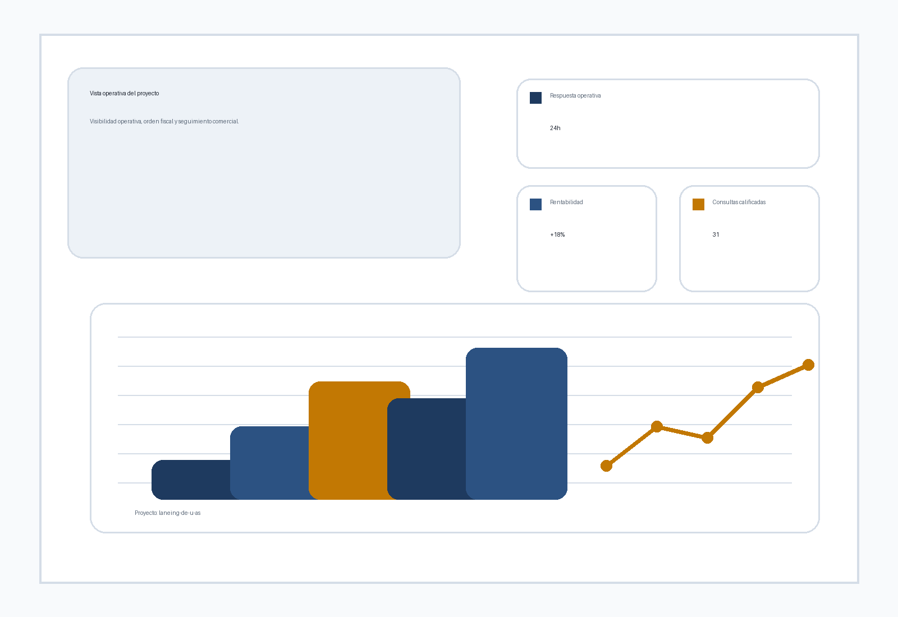

Posicionamiento
Claridad sobre la oferta y el diferencial principal.
Sitio profesional listo para avanzar
Ordenamos propuesta, narrativa y conversion para que la primera impresion no te haga perder tiempo ni oportunidades.

Servicios
Claridad sobre la oferta y el diferencial principal.
Secciones pensadas para explicar, ordenar y convertir.
Llamados a la accion visibles y recorrido sin friccion.
Por que funciona
Proceso
Leemos objetivo, mercado y restricciones del proyecto.
Armamos una interfaz alineada a la idea y al uso real.
Pulimos detalles visuales y dejamos la base lista para QA.
Confianza
“La base queda lista para iterar sin reconstruir el sistema cada vez.”
“La interfaz prioriza claridad, conversion y continuidad con el resto del pipeline.”
FAQ
Si. La base queda preparada para que Piccolo y el resto del pipeline la terminen de cerrar.
Si. La estructura se construye mobile first y luego escala a escritorio.
Si. La salida esta pensada para continuar con backend o deploy segun la necesidad.
Claridad, confianza y un flujo principal sin errores ni ruido.
Contacto
Deja la informacion base y seguimos con una propuesta clara para avanzar.